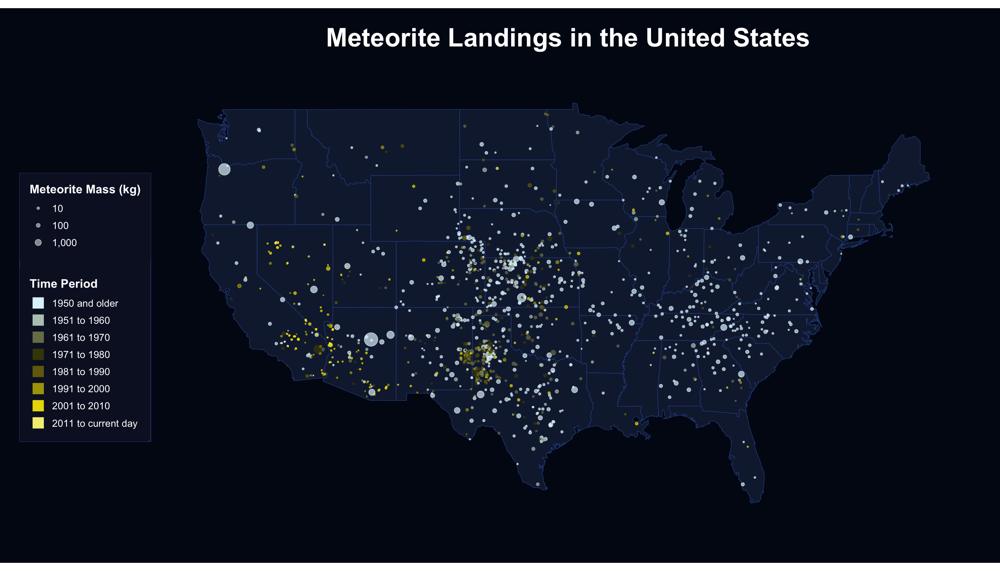
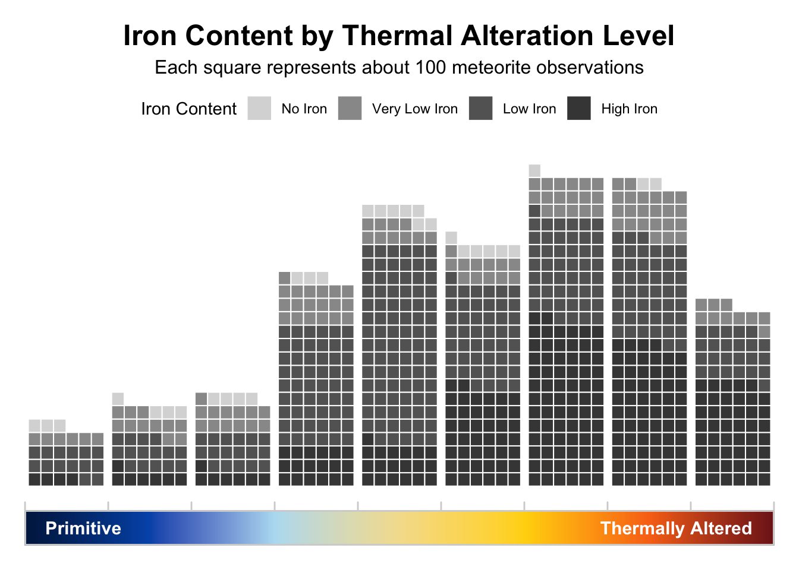

library(tidyverse)
library(janitor)
library(maps)
library(waffle)
library(patchwork)
library(scales)
meteorites <- read_csv("data-raw/Meteorite_Landings.csv", ) |>
clean_names()Portfolio Part 2: Data Cleaning and Rough Draft
My project will use NASA meteorite landing data to explore where meteorites are found, how recorded landings have changed over time, and how meteorite mass differs across categories.
Data Description
1. Identify your data source.
I will be using a dataset on meteorite landings from NASA, which I found through NASA’s Open Data Portal. The dataset contains records of meteorites that have been found or observed falling to Earth and includes their physical characteristics and geographic locations.
2. Describe your data, including variables and data types.
The dataset contains over 45,000 observations and includes a mix of categorical and numerical variables. These variables provide identifying information, classification details, measurements, and geographic coordinates that can be used to analyze both temporal and spatial patterns in meteorite landings.
| Name | Type | Description |
|---|---|---|
name |
character | name of the meteorite |
id |
numeric | unique identifier for each meteorite |
nametype |
character | indicates whether the meteorite is classified as valid |
recclass |
character | meteorite classification type |
mass (g) |
numeric | mass of the meteorite |
fall |
character | indicates whether the meteorite was observed falling or later discovered |
year |
numeric | year the meteorite was recorded |
reclat |
numeric | latitude coordinate of the meteorite landing |
reclong |
numeric | longitude coordinate of the meteorite landing |
geoLocation |
character | combined latitude and longitude coordinates |
3. Identify the research questions you want to answer.
- How has the number of recorded meteorite landings changed over time?
- Where are meteorites most commonly found across the globe?
- How does meteorite mass vary across different classifications and fall types?
Data Cleaning
Setup
This code chunk will load the packages I want to use and read in the raw meteorite data from the data-raw folder.
The original dataset has more than 45,000 rows. After using clean_names( ), variables such as mass (g) and geoLocation are renamed to cleaner formats like mass_g and geo_location.
[1] "name" "id" "nametype" "recclass" "mass_g"
[6] "fall" "year" "reclat" "reclong" "geo_location"Convert Variable Types
Next we will convert variable types to be better suited to our needs for making visualizations by using the mutate function to convert fall and reclass into factors.
meteorites <- meteorites |>
mutate(
fall = as.factor(fall),
recclass = as.factor(recclass)
)Remove Irrelevant Information
This step removes observations with missing values in key variables like mass, year, and location, since these are unnecessary for analysis and visualization. It also drops columns that are not needed for this project, such as identifiers and redundant location formatting, in order to simplify the dataset.
meteorites <- meteorites |>
filter(
!is.na(mass_g),
!is.na(year),
year <= 2026,
!is.na(reclat),
!is.na(reclong)
) |>
select(-geo_location, -id, -nametype)Create New Variables
The recclass variable contains detailed classification information that encodes multiple characteristics of each meteorite. To make this information more useful for analysis, I will extract and reorganize it into separate variables starting with composition..
meteorites <- meteorites |>
mutate(
composition = case_when(
str_detect(recclass, "^Iron") ~ "Iron",
str_detect(recclass, "^Pallasite") ~ "Iron",
str_detect(recclass, "^Mesosiderite") ~ "Iron",
str_detect(recclass, "^Lunar") ~ "Lunar",
str_detect(recclass, "^Martian") ~ "Martian",
str_detect(
recclass,
"^(Eucrite|Ureilite|Diogenite|Howardite|Aubrite|Acapulcoite|Lodranite|Brachinite|Winonaite|Angrite|Achondrite)"
) |
str_detect(recclass, "Acapulcoite/[Ll]odranite") ~ "Achondrite",
str_detect(recclass, "^LL") | str_detect(recclass, "OC") ~ "Ordinary Chondrite",
str_detect(recclass, "^H") ~ "High Iron Chondrite",
str_detect(recclass, "^L") ~ "Low Iron Chondrite",
str_detect(recclass, "^(CI|CM|CO|CV|CR|CK|CH|CB|C)") ~ "Carbonaceous Chondrite",
str_detect(recclass, "^(EH|EL|E)") ~ "Enstatite Chondrite",
str_detect(recclass, "^R") ~ "Rumuruti Chondrite",
str_detect(recclass, "^(Unknown|Stone-uncl|Stone-ung|Fusion crust|Impact melt breccia)") ~ "Unknown",
TRUE ~ "Other"
),
composition = factor(
composition,
levels = c(
"High Iron Chondrite",
"Low Iron Chondrite",
"Ordinary Chondrite",
"Carbonaceous Chondrite",
"Enstatite Chondrite",
"Rumuruti Chondrite",
"Achondrite",
"Iron",
"Lunar",
"Martian",
"Unknown",
"Other"
)
)
)
meteorites |>
count(composition, sort = TRUE)# A tibble: 12 × 2
composition n
<fct> <int>
1 High Iron Chondrite 15791
2 Low Iron Chondrite 12997
3 Ordinary Chondrite 4803
4 Achondrite 1315
5 Carbonaceous Chondrite 1277
6 Iron 1192
7 Enstatite Chondrite 442
8 Lunar 125
9 Martian 74
10 Rumuruti Chondrite 64
11 Unknown 31
12 Other 3Next I will create variables for thermal alteration and iron content. I will combine these and remove the NA values for my graphic later on.
meteorites <- meteorites |>
mutate(
thermal_alteration_num = str_extract(recclass, "\\d(\\.\\d+)?"),
thermal_alteration_num = as.numeric(thermal_alteration_num),
thermal_alteration = case_when(
thermal_alteration_num >= 3.1 & thermal_alteration_num < 4 ~ sprintf("%.1f", thermal_alteration_num),
TRUE ~ NA_character_
),
thermal_alteration = factor(
thermal_alteration,
levels = sprintf("%.1f", seq(3.1, 3.9, by = 0.1)),
ordered = TRUE
)
)
thermal_meteorites <- meteorites |>
filter(!is.na(thermal_alteration))
thermal_meteorites |>
count(thermal_alteration)# A tibble: 9 × 2
thermal_alteration n
<ord> <int>
1 3.1 27
2 3.2 37
3 3.3 41
4 3.4 94
5 3.5 127
6 3.6 111
7 3.7 139
8 3.8 144
9 3.9 82meteorites <- meteorites |>
mutate(
iron_scale = case_when(
str_detect(recclass, "^Iron") ~ "All Iron",
str_detect(recclass, "^H") ~ "High Iron",
str_detect(recclass, "^LL") ~ "Very Low Iron",
str_detect(recclass, "^L") ~ "Low Iron",
str_detect(recclass, "^(CI|CM|CO|CV|CR|CK|CH|CB|C)") ~ "No Iron",
TRUE ~ NA_character_
),
iron_scale = factor(
iron_scale,
levels = c("No Iron", "Very Low Iron", "Low Iron", "High Iron", "All Iron"),
ordered = TRUE
)
)
iron_meteorites <- meteorites |>
filter(!is.na(iron_scale))
iron_meteorites |>
count(iron_scale)# A tibble: 5 × 2
iron_scale n
<ord> <int>
1 No Iron 1277
2 Very Low Iron 4717
3 Low Iron 13152
4 High Iron 15971
5 All Iron 978thermal_iron_meteorites <- meteorites |>
filter(
!is.na(thermal_alteration),
!is.na(iron_scale)
)Next I will create variables for decades ranging from pre-1950 to current day as well as convert mass in grams to mass in kilograms.
meteorites <- meteorites |>
mutate(
time_period = case_when(
year <= 1950 ~ "1950 and older",
year <= 1960 ~ "1951 to 1960",
year <= 1970 ~ "1961 to 1970",
year <= 1980 ~ "1971 to 1980",
year <= 1990 ~ "1981 to 1990",
year <= 2000 ~ "1991 to 2000",
year <= 2010 ~ "2001 to 2010",
year > 2010 ~ "2011 to current day"
),
time_period = factor(
time_period,
levels = c(
"1950 and older",
"1951 to 1960",
"1961 to 1970",
"1971 to 1980",
"1981 to 1990",
"1991 to 2000",
"2001 to 2010",
"2011 to current day"
)
)
)
meteorites |>
count(time_period)|>
knitr::kable(caption = "Meteorite Records by Time Period")| time_period | n |
|---|---|
| 1950 and older | 1672 |
| 1951 to 1960 | 191 |
| 1961 to 1970 | 396 |
| 1971 to 1980 | 5052 |
| 1981 to 1990 | 8164 |
| 1991 to 2000 | 10737 |
| 2001 to 2010 | 10944 |
| 2011 to current day | 958 |
meteorites <- meteorites |>
mutate(
mass_kg = mass_g / 1000
)
meteorites |>
summarize(
min_mass_kg = min(mass_kg, na.rm = TRUE),
max_mass_kg = max(mass_kg, na.rm = TRUE)
) |>
knitr::kable(caption = "Meteorite Mass Range in Kilograms")| min_mass_kg | max_mass_kg |
|---|---|
| 0 | 60000 |
Save Cleaned Data
After cleaning and creating new variables, the dataset is saved to the data-clean folder as a new .csv file. This preserves a finalized version of the data that can be reused for visualization and analysis without repeating the cleaning steps.
write_csv(meteorites, "data-clean/meteorite_landings_clean.csv")Data Visualization
Rough Draft No.1
world_map <- map_data("world")
ggplot() +
geom_polygon(
data = world_map,
aes(x = long, y = lat, group = group),
fill = "#14213d",
color = "#2b4c8a",
linewidth = 0.25
) +
geom_point(
data = meteorites,
aes(
x = reclong,
y = reclat,
color = time_period,
size = mass_kg
),
alpha = 0.45
) +
coord_fixed(1.3) +
scale_size_continuous(
trans = "sqrt",
range = c(0.08, 6),
breaks = c(100, 1000, 10000),
labels = label_comma(),
name = "Meteorite Mass (kg)"
) +
scale_color_manual(
values = c(
"1950 and older" = "#DEF2F9",
"1951 to 1960" = "#B8C7BC",
"1961 to 1970" = "#777E57",
"1971 to 1980" = "#444406",
"1981 to 1990" = "#72690E",
"1991 to 2000" = "#ADA207",
"2001 to 2010" = "#E8DA00",
"2011 to current day" = "#F4ED80"
),
name = "Time Period"
) +
labs(
title = "Meteorite Landings Around the World",
x = NULL,
y = NULL
) +
theme_void() +
theme(
plot.background = element_rect(fill = "#020617", color = NA),
panel.background = element_rect(fill = "#020617", color = NA),
legend.background = element_rect(fill = "#0b132b", color = NA),
legend.box.background = element_rect(fill = "#0b132b", color = "#243b6b", linewidth = 0.5),
legend.key = element_rect(fill = "#0b132b", color = NA),
legend.text = element_text(color = "white", size = 10),
legend.title = element_text(color = "white", size = 12, face = "bold"),
plot.title = element_text(
color = "white",
size = 26,
face = "bold",
hjust = 0.5,
margin = margin(b = 20)
),
legend.position = "left",
legend.box = "vertical",
legend.margin = margin(10, 10, 10, 10),
plot.margin = margin(20, 20, 20, 20)
) +
guides(
size = guide_legend(
order = 1,
title.position = "top",
override.aes = list(color = "white", alpha = 0.5),
label.position = "right"
),
color = guide_legend(
order = 2,
title.position = "top",
override.aes = list(shape = 15, size = 5, alpha = 1)
)
)
Rough Draft No.2
us_map <- map_data("state")
us_meteorites <- meteorites |>
mutate(
us_state = maps::map.where("state", reclong, reclat)
) |>
filter(!is.na(us_state))
ggplot() +
geom_polygon(
data = us_map,
aes(x = long, y = lat, group = group),
fill = "#14213d",
color = "#2b4c8a",
linewidth = 0.25
) +
geom_point(
data = us_meteorites,
aes(
x = reclong,
y = reclat,
color = time_period,
size = mass_kg
),
alpha = 0.7
) +
coord_fixed(
ratio = 1.3,
xlim = c(-125, -66),
ylim = c(24, 50)
) +
scale_size_continuous(
trans = "sqrt",
range = c(0.08, 6),
breaks = c(10, 100, 1000),
labels = label_comma(),
name = "Meteorite Mass (kg)"
) +
scale_color_manual(
values = c(
"1950 and older" = "#DEF2F9",
"1951 to 1960" = "#B8C7BC",
"1961 to 1970" = "#777E57",
"1971 to 1980" = "#444406",
"1981 to 1990" = "#72690E",
"1991 to 2000" = "#ADA207",
"2001 to 2010" = "#E8DA00",
"2011 to current day" = "#F4ED80"
),
name = "Time Period"
) +
labs(
title = "Meteorite Landings in the United States",
x = NULL,
y = NULL
) +
theme_void() +
theme(
plot.background = element_rect(fill = "#020617", color = NA),
panel.background = element_rect(fill = "#020617", color = NA),
legend.background = element_rect(fill = "#0b132b", color = NA),
legend.box.background = element_rect(fill = "#0b132b", color = "#243b6b", linewidth = 0.5),
legend.key = element_rect(fill = "#0b132b", color = NA),
legend.text = element_text(color = "white", size = 10),
legend.title = element_text(color = "white", size = 12, face = "bold"),
plot.title = element_text(
color = "white",
size = 26,
face = "bold",
hjust = 0.5,
margin = margin(b = 20)
),
legend.position = "left",
legend.box = "vertical",
legend.margin = margin(10, 10, 10, 10),
plot.margin = margin(20, 20, 20, 20)
) +
guides(
size = guide_legend(
order = 1,
title.position = "top",
override.aes = list(color = "white", alpha = 0.5),
label.position = "right"
),
color = guide_legend(
order = 2,
title.position = "top",
override.aes = list(shape = 15, size = 5, alpha = 1)
)
)
Rough Draft No.3
waffle_plot <- thermal_iron_meteorites |>
mutate(
iron_stack = factor(
iron_scale,
levels = c("High Iron", "Low Iron", "Very Low Iron", "No Iron")
)
) |>
count(thermal_alteration, iron_stack) |>
ggplot(aes(fill = iron_stack, values = n)) +
geom_waffle(
n_rows = 6,
size = 0.35,
color = "white",
flip = TRUE
) +
facet_wrap(~ thermal_alteration, nrow = 1, strip.position = "bottom") +
scale_fill_manual(
values = c(
"No Iron" = "#d9d9d9",
"Very Low Iron" = "#999999",
"Low Iron" = "#646464",
"High Iron" = "#454545"
),
breaks = c("No Iron", "Very Low Iron", "Low Iron", "High Iron"),
name = "Iron Content"
) +
labs(
title = "Iron Content by Thermal Alteration Level",
subtitle = "Each square represents about 100 meteorite observations"
) +
theme_minimal() +
theme(
panel.grid = element_blank(),
panel.spacing.x = unit(0, "pt"),
axis.text = element_blank(),
axis.title = element_blank(),
axis.ticks = element_blank(),
legend.position = "top",
strip.text = element_blank(),
plot.margin = margin(t = 10, r = 10, b = 0, l = 10),
plot.title = element_text(size = 18, face = "bold", hjust = 0.5),
plot.subtitle = element_text(size = 12, hjust = 0.5)
)
x_axis_gradient_data <- tibble(
x = seq(1, 700),
y = 1,
value = seq(0, 1, length.out = 700)
)
bin_amount <- 9
x_axis_gradient_bar <- ggplot(x_axis_gradient_data, aes(x = x, y = y, fill = value)) +
geom_tile(height = 1) +
annotate(
"text",
x = 20,
y = 1,
label = "Primitive",
color = "white",
hjust = 0,
fontface = "bold",
size = 4
) +
annotate(
"text",
x = 680,
y = 1,
label = "Thermally Altered",
color = "white",
hjust = 1,
fontface = "bold",
size = 4
) +
scale_fill_gradientn(
colors = c("#001f4d", "#0057b8", "#b7dff2", "#f4df9c", "#ffd60a", "#f97316", "#7f1d1d"),
guide = "none"
) +
scale_x_continuous(
expand = c(0, 0),
breaks = seq(1, 700, length.out = bin_amount + 1),
guide = guide_axis(position = "top")
) +
coord_cartesian(expand = FALSE) +
theme_void() +
theme(
panel.border = element_rect(color = "lightgray", fill = NA, linewidth = 1),
axis.ticks.x = element_line(color = "lightgray", linewidth = 0.5),
axis.ticks.length.x = unit(5, "pt"),
plot.margin = margin(t = -5, r = 10, b = 10, l = 10)
)
waffle_plot / x_axis_gradient_bar +
plot_layout(heights = c(10, 1))